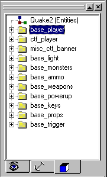
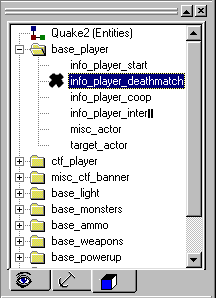
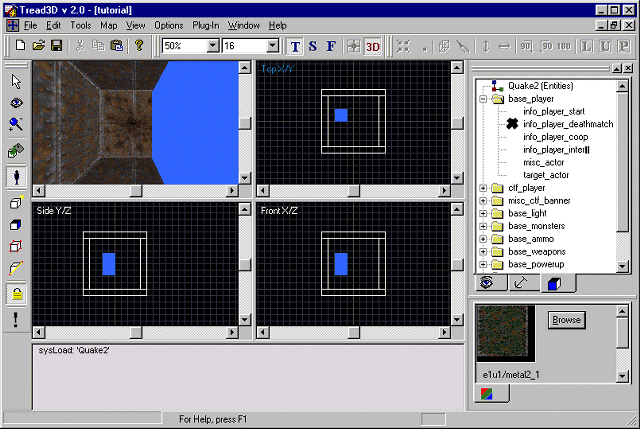
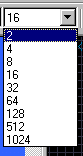
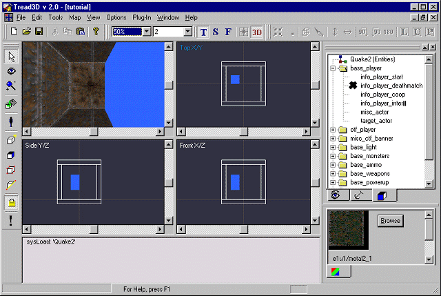
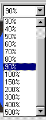
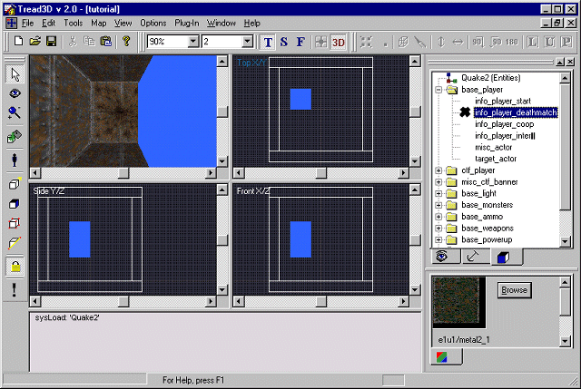
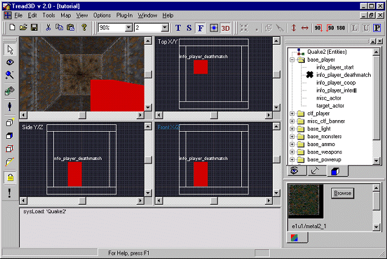
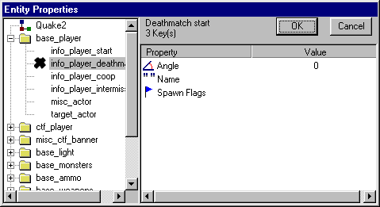
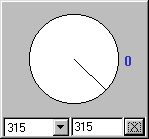

This is a walk-through as to how to place an entity.
Before starting this tutorial you should first get acquainted with the basics of the "Tread3D" editor; the screen and the various commands that are available.
As in the previous tutorials start "Tread3D" and make a very basic hollowed brush (A room); or just open your saved file called "tutorial".
Your screen should look like the one below.

You will notice that what you have is a basic room with four walls, a ceiling and a floor.
Lets add a Deathmatch Start entity.
Now click on the "Entity" button.

You will notice that the information in the "Object Workspace" has changed.
The "Object Workspace" should look like the one below.

The information is now a directory of all entities for Quake2. Open up the "base_player" folder and click on "info_player_deathmatch".
The "Object Workspace" should look like the one below.

Now just move the pointer into the room in in the TopX/Y view.
Click anywhere inside the room where you want the entity.
Your screen should look like the one below.

Now click on the pointer button.
(This turns entity placement off)
You will notice that the start position is well off the floor in the FrontX/Y and SideX/Y views.
Lets lower the entity so it is about 2 units off the floor.
Before you can lower the entity you must change the grid spacing to 2 units.
Click and scroll down on the "Grid Factor" drop down display and set it to 2 units.
The "Grid Factor" drop down display is shown below.

Your screen should look like the one below.

The grid lines are very hard to see, so lets "Zoom" in on the entity.
Click and scroll down on the "Zoom Factor" drop down display and set it to 90.
The "Zoom Factor" drop down display is shown below.

Your screen should look like the one below.

Now point and click on the entity once and you will notice that it is highlighted.
Click and hold on the entity and drag it closer to the floor.
Your screen should look like the one below.

Now is a good time to check the entities properties.
Just click on the "Entities Properties" Button.
The "Entity Properties" button is shown below.

A new window now appears which lists all the properties of the highlighted entity.
The "Entity Properties" window is shown below.

To change any of the properties just "double click" on the property you want to change.
We will change the angle so that a player looks at the center of the room.
Now just "double click" on the "Angle" property.
The angle adjustment screen now appears.
The angle adjustment screen is show below.

Adjust the angle to 315 degrees.
Now click on the "X" in the angle adjustment screen.
Finally, just click "OK" in the entities properties window.
Your screen should look like the one below.

What you have done is added an entity and adjusted its properties.
As a side note you could have used the "Zoom" button to zoom in on the entity.
Remember you must use this tool in each view individually.
The "Zoom" button looks like this.

Also, you could have used the "Tools Menu" to find an entities properties.
The "Tools Menu" looks like this.

Thats all there is to it.
Now resave your work.